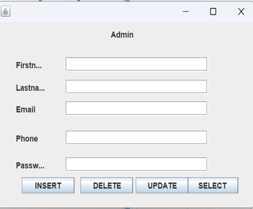
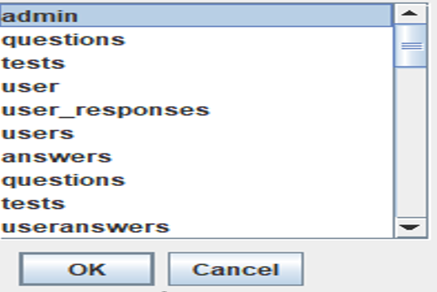
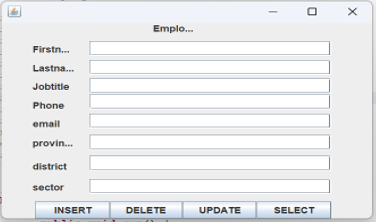
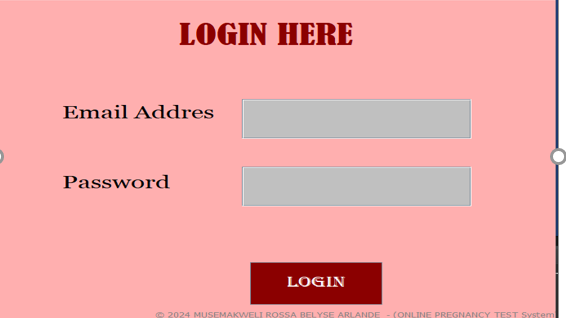

- DATABASE
Database name used: SEEDs MANAGEMENT SYSTEM.
- Tables
- Admin Table
- farmer Table
- seeds Table
- Payment Table
- empoyee Table
- Attributes
- Attributes
- Attributes
- Attributes
- Attributes
Admin table This is table that will be only created by admin and will hold other system users apart from admin will give them email and password that they will use to login and access the project or system, and also used to register if she/he don’t have an account so once you must to create account in order to login and access or use the system. Note: the created Admin will not have same ability and right in the system.
This table represents the users of the system who place orders/and buy the seeds product. The farmer table typically includes the following details: farmer ID, Fname, Lname, phone, email, district, sector, cell, village. This is a table that will be only created by admin, the email and password of customer will be used to login in the system if no they will no longer get access to system.
This table represents the products that are available for sell /purchase on the system. The seeds table typically includes the following details: seed ID, seed name, product Grade, price_per_unity, Mfg_date, Exp-date.the products will be put by the vendor or admin into the system and every operation will be made by them like deleting, add, updating,and update.
This table represents the payment information for an order that was placed. The payment table typically includes the following details: payment_id, payment date, payment amount, payment method, order, payment status, customer_id,phone.The payment is made by a customer who liked a kind of product after browsing in system.
This table represents the businesses that supply the products to the system. The employee table typically includes the following information: employee ID, fname, lname, phone, vemail, district, sector, cell, village, username, password. employee will put a username and password he wants during signing up or to create a new account and will always use it in loging into a system any time. employee is the one who will be putting the items or the products in the system similarly admin. there are only ones who have the ability to delete, create, update, insert the data.
Attributes of Admin Table
Here are the descriptions or purposes of the attributes/columns used in Admin table:
id (int)primary key: The columns which represents unique identifier of admin.
fname(varchar): The columns which represents first name of admin.
lname(varchar): The columns which represents last of name admin.
phone(varchar): The column which represents telephone number of admin.
email(varchar): The column which represents or store email of admin.
username(varchar): The column which represents of user name admin must have as uniqueness
password(varchar): The column which represents password of user.
Attributes of farmer Table
Here are the descriptions or purposes of the attributes/columns used in customer table:
cid int primary key: The columns which represents id of usercustomer.
fname(varchar): The columns which represents first name of customer.
lname(varchar): The columns which represents last name .
phone(varchar): The column which represents telephone number that you contact anytime for a given reason.
email(varchar): The column which represents or store email .
district: The column which represents the address like district of customer
sector(varchar): The column which represent customer sector .
cell(varchar): The column which represents customer cell.
village(varchar): The column which represents customer village
username(varchar): The column which represents customer username.
password(varchar): The column which represents customer password.
Attributes of seeds Table
Here are the descriptions or purposes of the attributes/columns used in Admin table:
pid (int)primary key: The columns which represents product id.
pname(varchar): The columns which represents product name.
pgrade(int): The columns which represents product grade if is 1 or 3 it depend on quality.
price_per_unity(float): The column which represents product cost per each unity.
mfg_date(date): The column which represents or store the dates on which it was made.
exp_date(date): The column which represents the dates on which it will expires
Attributes of payment Table
Here are the descriptions or purposes of the attributes/columns used in payment table:
payid (int) primary key: The columns which represents id of payment that was made .
paydate(date): The columns which represents the date of payment.
pamount(int): The columns which represents amount money or price the product was paid.
pmethod(varchar): The column which represents the method of payment if is mtn or airtel or bk...end so on.
orid (int)foreign key: The column which represents number of oder that was made as an id of order forign key in payment .
pay_status(varchar): The column which represents status of payment if money was paid ,received,or pending
cid (int) foreign key: The column which represents id a number as a foreign key or a number of a customer who made payment
phone (varchar): The column which represents phone of that customer who made payment
Attributes of employee Table
Here are the descriptions or purposes of the attributes/columns used in vendor table:
vid (int) primary key: The columns which represents id of a seller or employee .
vfirstname(varchar): The columns which represents firstname.
vlastname(varchar): The columns which represents lastname.
phone(varchar): The column which represents phone.
vemail(varchar): The column which represents email .
district(varchar): The column which represents address as district.
sector(varchar): The column which represents sector.
cell(varchar): The column which represents cell
village(varchar): The column which represents village
username(varchar): The column which represents username
password(varchar): The column which represents password
- JAVA PROGRAMING
- INTRODUCTION
- Forms and Images
In this chapter I will be describing how powerful general purpose programming language was used to create the analyzed system. Under this chapter I will undergo full detail of how everything will function together with database that have been describe above and how it cope with full analyzed system
Eclipse IDE: an integrated development environment used in computer programming. It contains a base workspace and an extensible plug-in system for customizing the environment. It is the second-most-popular IDE for Java development, and, until 2016, was the most popular.
ADMIN
- ADMIN
Admin in role involves overseeing various tasks related to seed management The admin typically has privileges such as adding, updating, or delating seed information, managing user accounts, and generating reports.
the admin adding, updating, or delating seed information, managing user accounts.
- view form
Here admin has access to view all the tables in this system and see what are the incredentials in those table. Let us take example like user_response table( from our database).
Here in employee ensuring the successful development, implementation, and operation Of the system to improve seed management practices in agriculture.
form provides a user-friendly interface for users to log in to the seeds management System by entering their email This address and password.
This will describe how the home page will look like after login or registration. It will contain many button each button will have its functionality .